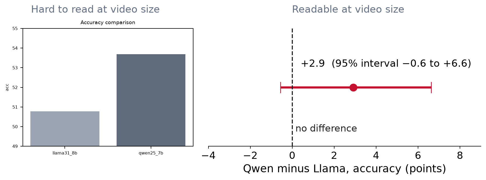

Storyboard feedback and five-minute team meetings · Thu Apr 22
Shannon Gallagher
Today’s plan
Your storyboard is back on paper, with my comments.
First, ten minutes on giving a better presentation.
Then each team meets with me for about five minutes, in team order.
While you wait, work through the list on the last slide.
Slides and video are due Sunday at 11:59 pm. Every requirement is in the Project Description, and all grading is in the Project Rubric. These slides add none.
Four problems to look for in your storyboard
A Results title that names a topic (“Calibration”) instead of stating a claim.
A title with no number, or a number with no interval.
A result the Discussion never uses.
One quantity with two names, such as “accuracy” on one slide and “performance” on the next.
Find each one in your own storyboard before your meeting.
Make every figure readable at video size

Use large text. If it is hard to read on a phone, it is hard to read in your video.
Label axes in words, with units. Show the interval, and a line at zero for a difference.
Give each figure one message, and state it in the slide title.
Talk to your client
Narrate in your own words. Keep notes as keywords, not a script.
A script read aloud sounds like one. An AI-written script sounds like Gemini’s IMRaD.
Say each number slowly, then say what it means for the client.
Hand off with a sentence that links two claims: “That 2.9-point gap is an average. Next, how much it changes from task to task.”
Five minutes goes fast
The Description suggests about one minute each for the Introduction, Methods, and Discussion, and two for Results.
Rehearse with a timer. A run that takes 6:30 today will not shrink by Sunday.
If you are over, cut a slide. Do not talk faster.
Move what you cut to the appendix, ready for the oral presentation.
Record in a quiet room with the microphone close, and do a test upload before Saturday.
While you wait for your meeting
Read my comments, and fix your slide titles first.
Read only your titles to a neighboring team. Can they say your recommendation?
Give that team your full five minutes, with a timer. They name one thing to cut.
Draw a card and explain it for 90 seconds: the baseline, the main comparison, calibration, the sensitivity analysis, or how you used AI.
Before you leave, each of you finishes this sentence on an exit ticket: “The part of our project I would be weakest defending is ___.”
Slides and video: Sun Apr 25, 11:59 pm, no extensions. Oral presentations: Apr 27–30, in your team’s sign-up slot. The work-session guide has the weekend checklist.